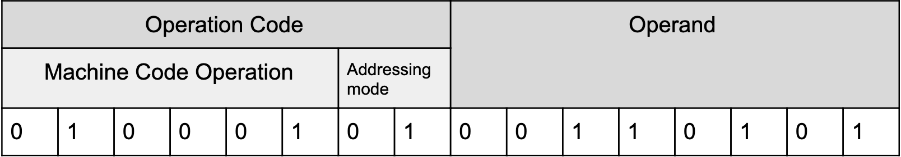

A CPU consists of an arithmetic logic unit (ALU), which completes arithmetic and logical operations, a control unit (CU), which decodes instructions and coordinates the activities of the CPU, as well as several registers and buses.
Program counter (PC) - holds the address of the next instruction
Accumulator (ACC) - holds results from calculations
Memory address register (MAR) - holds an address currently in use, e.g. to be read or written to
Memory data register (MDR) - holds data currently in use
Current instruction register (CIR) - holds the current instruction
Data bus — a bidirectional bus that transfers data and instructions between components
Address bus — used to transfer addresses between components
Control bus — a bidirectional bus that is used to transfer control signals sent from the CU
Instructions
Each instruction can be split into two parts. The opcode and the operand. The opcode contains the operation — for example, fetch or add, and the operand contains the data to be operated on.

The addressing mode section defines how the data bus retrieves the instruction if necessary. There are four main types of addressing modes.
Immediate addressing — the operand is the data to be used e.g. LOAD #5 will load value 5
Direct addressing — the operand's memory address holds the data to be used e.g. LOAD 500 will load the value in memory location 500
Indirect addressing — the operand's memory address is the location of the data to be used e.g. LOAD (500) will load the value found at the memory address specified in memory location 500
Indexed addressing — the operand's memory address plus some constant holds the data to be used e.g. LOAD 500, X will load the value in memory location 500+X
Fetch Decode Execute Cycle (FDE cycle)
The FDE cycle is a sequence of operations to execute an instruction.
Address from the PC is copied to the MAR (by the address bus)
The data at the address is fetched and stored in the MDR (by the data bus)
Simultaneously, the PC is incremented by 1
The data in the MDR is copied to the CIR (by the data bus)
The contents of the CIR are split into the operand and opcode
The opcode is sent to the CU (by the data bus) and is decoded
The CU directs the execution of the opcode e.g., signals the ALU to perform a logic operation
Factors affecting the performance of a CPU
Clock speed (Hz) — the number of cycles performed in the CPU per second
Number of cores — a core is an independent processor capable of running its own FDE cycle
Cache size — memory inside the CPU which holds commonly used instructions. Cache is fast because it is physically close to the other components of the CPU
When it comes to clock speed, the faster, the better. However, more cores and higher cache size are not always better for performance. Some programs only work on a single core, so the other cores aren't used. The number of cores affecting the performance of a CPU depends on which program is running and how the program is coded. The size of the cache is limited by the amount of space is a CPU. The larger the CPU, the further the cache is from key components, which slows down retrieval.
Pipelining
In the FDE cycle, while one instruction is being executed, another can be fetched and another can be decoded meaning three instructions are on the FDE cycle at the same time. This reduces idle time in the CPU; however, it can lead to errors — for example, the instruction being executed changes a value in memory after it has been fetched.
Different Architectures
Von Neumann architecture
Data and instructions are stored in the same location, and the data bus is used for both data and instructions
Advantages include: cheaper to develop, as the CU is easier to design, programs can be optimised in size
Harvard architecture
There are separate memories for data and instructions as well as separate buses for data and instructions
Advantages include: faster execution as data and instructions can be fetched in parallel, the memories can be different sizes depending on your requirements
Contemporary processing
A combination of Von Neumann and Harvard architecture - Von Neumann is used when working with data and instructions from the main memory, whereas Harvard is used to divide cache into instructions and data